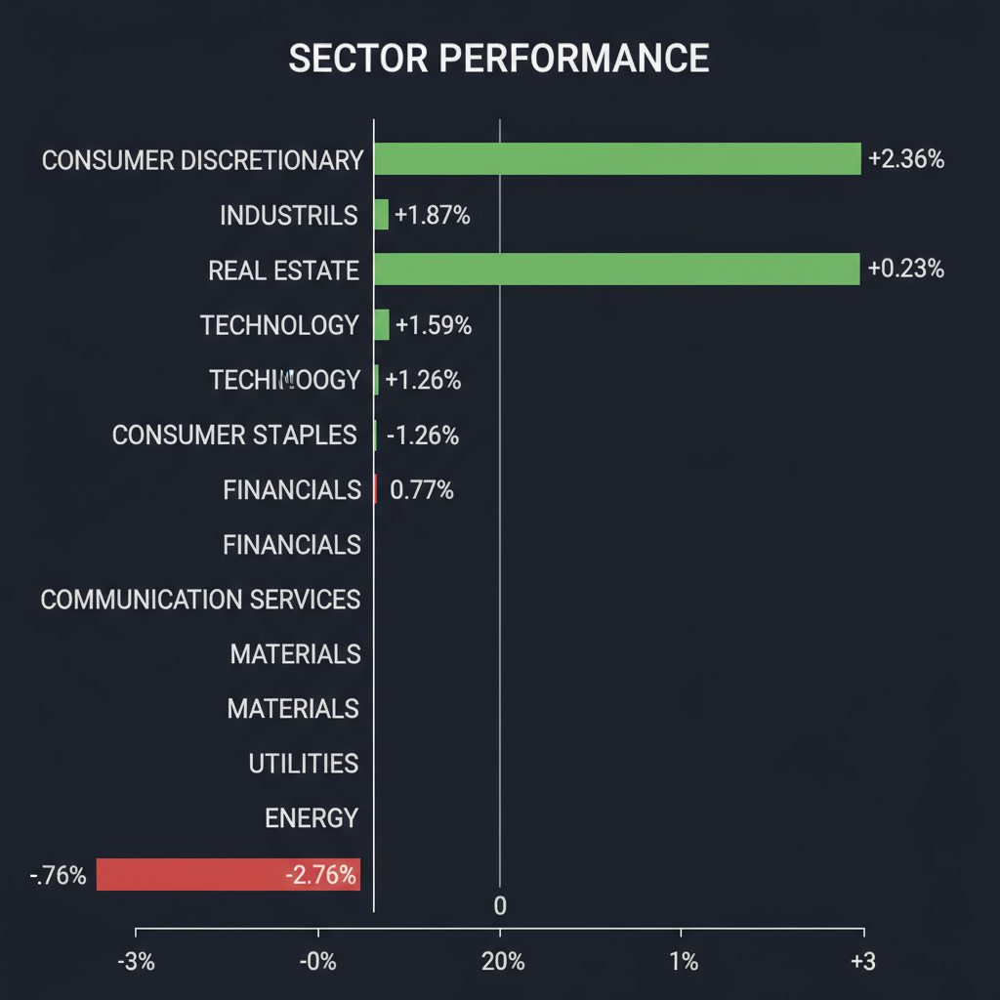
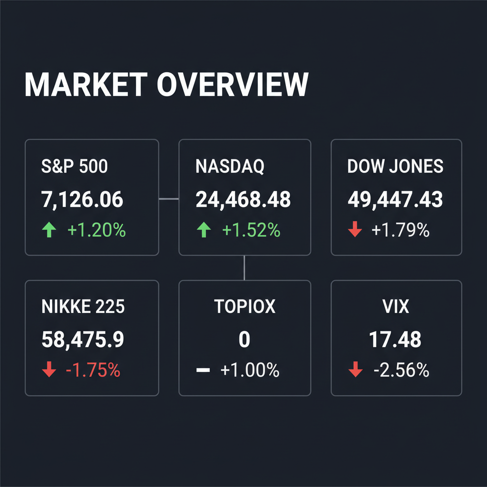

Daily Investment Report - 2026-04-19
Generated: 2026/4/19 7:16:38


提供されたミーティング内容に基づき、投資家向けの最終レポートを作成しました。
1. エグゼクティブサマリー
- 米国株は強いモメンタムで上昇する一方、日本株は高値警戒感から調整局面に入り、中東の地政学リスクを軽視して株高が進む「ニュースと市場データの強烈な乖離」が発生しています。
- 足元のガソリン高などスタグフレーションの兆候が見られる中、投資家は決算の過去データではなく「将来のガイダンス」に対して極めてシビアになっており、銘柄選別が急激に進んでいます。
- 市場の過剰な楽観バイアスに対するテールリスク（中東情勢の急悪化や日銀の政策転換）への備えとして、現金比率の引き上げやヘッジポジションの構築など、厳格なリスク管理が求められる局面です。
2. 注目銘柄リスト
強気（買い推奨）
- インフロニア・ホールディングス（5076） [約4,000億円]: 水インフラ企業「水ing」の買収により景気に左右されない強固なストック型収益を獲得し、バリュエーションも割安で下値リスクが限定的です。
- エレメンツ（5246） [小型株]: 決算でプラスインパクトをもたらした隠れた高成長株であり、オンライン本人確認需要の急増を背景に、マクロの逆風下でも高い売上成長が見込めます。
- Nexstar Media Group（NXST） [約55億ドル]: 全米最大のローカルTV局で強力なフリーキャッシュフローを創出しており、M&A頓挫のニュースによる短期的な売りは絶好の押し目買いの機会となります。
- セイワHD（7431） [小型株]: 確かな業績の裏付け（営業利益率の改善など）がありながら機関投資家のカバーが薄く、低PER・低PBRで放置されているため中長期的な株主価値向上が期待できます。
中立（様子見）
- QPS研究所（5595） [中小型株]: 宇宙ビジネスの国策テーマとして巨大な潜在市場を持ちますが、直近の決算発表で窓を開けて急落しているため、落ちるナイフを掴まずチャートの底打ちシグナルを待つべきです。
- SHIFT（3697） [中大型株]: ソフトウェア品質保証の寡占化で高成長を維持する有望企業ですが、現在の高いバリュエーションではガイダンス未達時の急落リスクを孕むため、安全マージンが確保できる押し目を待つべきです。
弱気（警戒）
- 高島屋（8233） / J.フロント リテイリング（3086） [中大型株]: インバウンドの好材料は既に織り込まれており、円安とインフレによる国内中間層の実質賃金低下・消費手控えにより利益成長が頭打ちとなる「バリュートラップ」の危険があります。
- ニデック（6594） [大型株]: 不正会計問題の浮上が報じられており、財務諸表の信頼性が担保されない現状ではバリュエーション評価が不可能なため、直ちに投資対象から除外すべきです。
3. セクター推奨ランキング
サプライチェーンの再編（インド・米国への工場移転）やインフラ投資の恩恵を直接受け、マクロ環境の逆風下でも底堅い資金流入とモメンタムを維持しています。
- 2位：テクノロジー・サイバーセキュリティ関連（XLKの一部）
AI投資がブームからインフラ構築のフェーズへ移行しており、金利の落ち着きが成長を下支えしますが、高すぎるバリュエーションには注意が必要です。
テクニカル的には下落トレンドにありますが、市場が完全に過小評価している「ホルムズ海峡封鎖」などのテールリスクに対する必須の保険（ヘッジ枠）としてポートフォリオへの組み入れを推奨します。
テクニカルな買い戻しで足元の株価は上昇していますが、ガソリン価格高騰（1ガロン4ドル）による実質所得の減少が消費活動を直撃しており、ファンダメンタルズと株価の乖離による急落リスクが極めて高いためアンダーウェイトを推奨します。
4. 今週の注目イベント
- 4月中旬〜下旬：3月の全国消費者物価指数（CPI）の発表
- 4月中旬〜下旬：米国の3月小売売上高の発表
- 4月20日～24日：日経平均の推移（予想レンジ5万7,000円～6万500円）とサポートラインの攻防
- 日付未定：米軍主導の多国籍軍による、ホルムズ海峡でのイラン関連船舶への立ち入り検査（臨検）の実施動向
- 日付随時：国内外の中小型株を中心とした本格的な決算発表と、次期業績見通し（ガイダンス）の公表
5. リスク要因
- イランとの交渉決裂とホルムズ海峡の完全封鎖による、原油価格の暴騰および第3次オイルショックの発生。
- ガソリン高とインフレ再燃によるスタグフレーションの進行と、それに伴う外食・エンターテインメントなど裁量消費の深刻な冷え込み。
- 高バリュエーションの成長銘柄が市場の期待する「完璧なガイダンス」を出せなかった際に発生する、容赦のない売りと急激なバリュエーション修正。
- 1ドル160円台を視野に入れた極端な円安進行に対する、日銀のパニック的なサプライズ利上げと円キャリー取引の巻き戻しによるフラッシュ・クラッシュ。
6. アクションアイテム
- ポートフォリオ全体のポジションサイズを通常の半分程度に落とし、現金比率を30%以上に引き上げて流動性を確保する。
- 利益の乗っている高PERのテクノロジー株や、足元で実体経済と乖離して急騰している一般消費財（XLY）の一部について、速やかに利益確定を行いエクスポージャーを縮小する。
- ブラックスワン・イベント（地政学リスクの急発現）への保険として、総資産の5〜10%をエネルギーセクター（XLE）やVIXコールオプションに振り分ける。
- 決算で急落した新興銘柄（QPSHDなど）への安易な逆張り（落ちるナイフを掴む行為）は避け、チャート上の明確な底打ちやサポートラインでの反発を確認してからエントリーする。